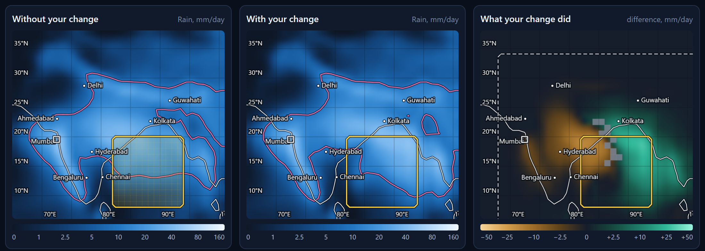

Beyond forecasting a laboratory for the monsoon
ForecastToday's weather → the next 10 days
What-if engineChanged weather → an alternative future
Butterfly FinderA chosen outcome → the starting conditions that drive it

Butterfly Finder: a gradient-based sensitivity engine
Pick an outcome, here rain near Kolkata on day 4 (black box). VARUNA back-propagates through the forecast to find which squares and fields of the start day drive it (middle map). Then it tests its own answer: it nudges the orange patch and reruns the model (right map).+1.82mm/day predicted from sensitivity
+2.16mm/day in a direct model rerun
0.00same nudge half a map away

What-if engine
The official "warm Bay of Bengal" shock (orange box, +3 °C and +15% moisture), rain two days later: without, with, and the difference. The dashed line is the furthest the model can carry a change by that day. Grey squares are where fewer than 45 of 50 futures agree which way the change pushes. Any region, any of five fields, about 0.4 s per rerun, so a judge can ask for a new shock on the spot.The rest of the dashboard
- Live coupling. Every forecast and what-if on screen is a live call to the graded server's own route. A panel shows the speed, the zero-shock test and a same-input-twice test.
- Forecast. The model next to what really happened, and the gap between them. Click a square for its day-by-day chart.
- 50 futures, from residual-based stochastic perturbations. Fifty runs from nudged starts, each given a small random kick per day sized to the model's own one-day miss on 2019. Their spread is 0.70 to 1.0 of the real miss on 2020 and 2021. Maps show how many of 50 cross a line you pick, a bad case, and where the runs split. Weather centres already run ensembles; ours sits beside the what-if on the same map.
- Alerts. Plain rules for five roles, checked in each of the 50 futures, with the count, the likely day and the numbers behind it.
- Also. A wind-aware sea route. A physical consistency suite of 12 live checks (11 pass on the demo day; the fail is shown). A monsoon phase line. A natural-language query box (template-based).
Applications: the five roles in the Alerts tab
| Who | Their question | What VARUNA shows |
|---|---|---|
| Farmer | Is the cut crop safe for 3 days? | Futures with 10 mm or more in a day within 3 days |
| Fisher | Too windy at sea in 3 days? | Futures with daily mean wind of 10.8 m/s or more at sea |
| Heat officer | A hot spell this week? | Futures with 2 or more days at least 3 °C above normal |
| Hill routes | Heavy rain or cold in the hills? | Futures with 10 mm or more above 1000 m; a cold-spell rule |
| Logistics | Very heavy rain within 5 days? | Futures with 25 mm or more in a day within 5 days |
Thresholds are for 100 km daily squares; several are team choices and marked on screen. This is a regional indicator that does not replace official warnings, and no agency has tested it. The Finder adds a model-indicated region worth watching, not a proven early sign.
Validated boundaries and future work
| What we measured | Next step |
|---|---|
| Past a week it adds little: day-8 skill −0.01 against normal weather | Longer multi-day training |
| Heavy rain: frequency about right, place and timing weak (8.0 / 15); the most intense rain is too weak (day-8 variance 0.63) | Loss terms aimed at extreme rain |
| Wind shock fades too fast: the response spreads outward in 23% of windows | Training on perturbed pairs |
| Warm-ocean shock overshoots 5 standard deviations in 15% of windows, always in rain; spreads outward in 77% | Bounded rain response |
| Over 30 days in a row the rain map keeps 39% of its day-1 contrast, under our 40% line | Longer rollouts in training |
| One square is 100 km and one step is a day; cyclone cores are smaller than a square | A finer regional grid |
| Counts out of 50 are scenario frequencies, not calibrated probabilities | Calibration against observed frequencies |
| A what-if far outside 2005 to 2018 is extrapolation | A reliability flag; start-day unusualness is already shown |
Built during the event with PyTorch, NumPy, xarray, FastAPI and uvicorn. No external weather data or services. AI coding tools were used and all code was written during the hackathon. The dashboard runs locally from the repo: README.md has the two commands and screenshots. There is no hosted demo.